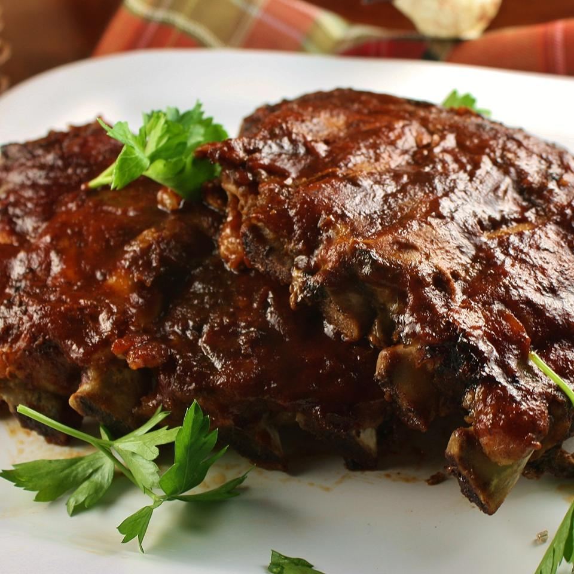

Slow Cooker Baby Back Ribs

from allrecipes.com
Description
These baby back ribs cooked in a crockpot are the best I've had, short of the actual grilling method of course! This is a very simple recipe that I (norah from allrecipes.com) came up with a few years ago. It's not rocket science, just ribs cooked in the slow cooker and finished with barbeque sauce in the oven. This is what I do when I want ribs during the week and have to work all day. I'm eating them within 30 minutes of getting home, and they turn out perfect every time!
Ingredients
- 3 pounds baby back ribs, trimmed
- salt and ground black pepper, to taste
- ½ onion, sliced
- 1 clove garlic, minced
- 1 (18 ounce) bottle barbeque sauce
Steps
- Season ribs with salt and pepper.
- Pour 1/2 cup water into the slow cooker, then add ribs. Scatter onion and garlic over top.
- Cover and cook on Low for 8 hours or High for 4 hours.
- When the ribs are almost finished, preheat the oven to 375 degrees F (190 degrees C).
- Transfer ribs from the slow cooker to a baking sheet and coat with barbeque sauce. Discard onion and garlic.
- Bake ribs in the preheated oven until sauce caramelizes and sticks to meat, 10 to 15 minutes.